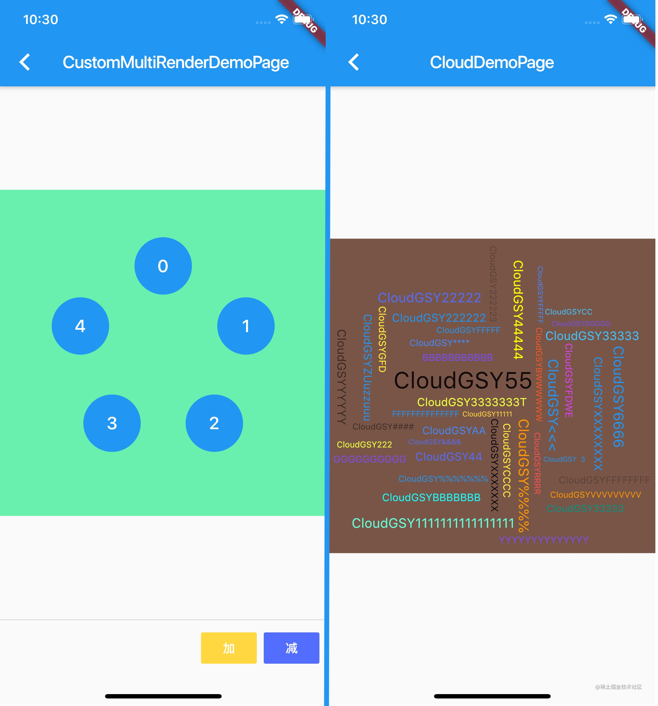
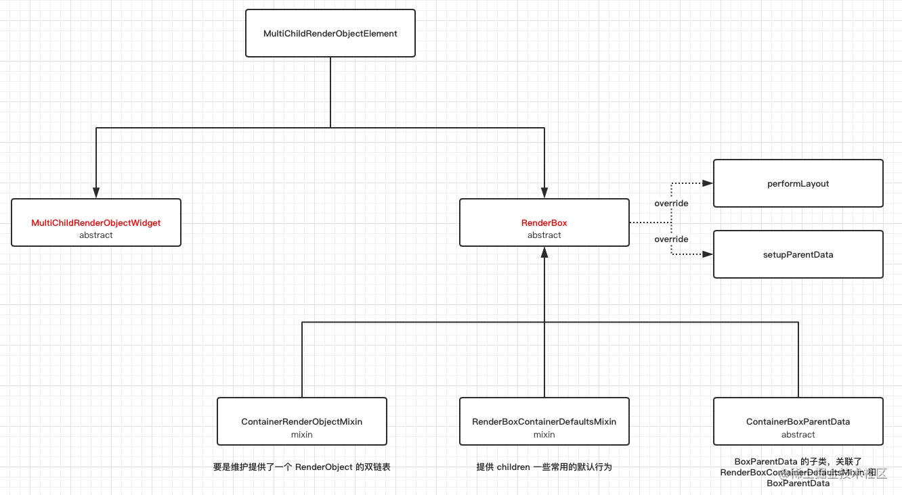
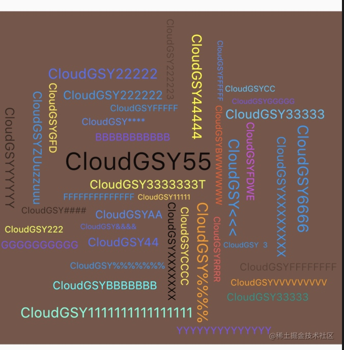
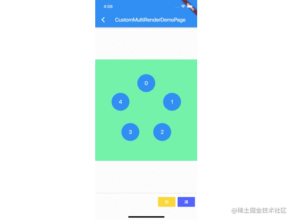

本篇将解析 Flutter 中自定义布局的原理，并带你深入实战自定义布局的流程，利用两种自定义布局的实现方式，完成如下图所示的界面效果，看完这一篇你将可以更轻松的对 Flutter 为所欲为。

前言
我们应该都了解过 Widget 、Element 和 RenderObject 之间的关系，所谓的 自定义布局，事实上就是自定义 RenderObject 内 child 的大小和位置 ，而在这点上和其他框架不同的是，在 Flutter 中布局的核心并不是嵌套堆叠，Flutter 布局的核心是在于 Canvas ，我们所使用的 Widget ，仅仅是为了简化 RenderObject 的操作。
对于 Flutter 而言，整个屏幕都是一块画布，我们通过各种
Offset和Rect确定了位置，然后通过Canvas绘制UI，而整个屏幕区域都是绘制目标，如果在child中我们 “不按照套路出牌” ，我们甚至可以不管parent的大小和位置随意绘制。
MultiChildRenderObjectWidget
了解基本概念后，我们知道 自定义 Widget 布局的核心在于自定义 RenderObject ，而在官方默认提供的布局控件里，大部分的布局控件都是通过继承 MultiChildRenderObjectWidget 实现，那么一般情况下自定义布局时，我们需要做什么呢？

如上图所示，一般情况下实现自定义布局，我们会通过继承 MultiChildRenderObjectWidget 和 RenderBox 这两个 abstract 类实现，而 MultiChildRenderObjectElement 则负责关联起它们， 除了此之外，还有有几个关键的类： ContainerRenderObjectMixin 、 RenderBoxContainerDefaultsMixin 和 ContainerBoxParentData 。
RenderBox 我们知道是 RenderObject 的子类封装，也是我们自定义 RenderObject 时经常需要继承的，那么其他的类分别是什么含义呢？
ContainerRenderObjectMixin
故名思义，这是一个 mixin 类，ContainerRenderObjectMixin 的作用，主要是维护提供了一个双链表的children RenderObject 。
通过在 RenderBox 里混入 ContainerRenderObjectMixin， 我们就可以得到一个双链表的 children，方便在我们布局时，可以正向或者反向去获取和管理 RenderObject 们 。
RenderBoxContainerDefaultsMixin
RenderBoxContainerDefaultsMixin 主要是对 ContainerRenderObjectMixin 的拓展，是对 ContainerRenderObjectMixin内的 children 提供常用的默认行为和管理，接口如下所示：
/// 计算返回第一个 child 的基线 ，常用于 child 的位置顺序有关
double defaultComputeDistanceToFirstActualBaseline(TextBaseline baseline)
/// 计算返回所有 child 中最小的基线，常用于 child 的位置顺序无关
double defaultComputeDistanceToHighestActualBaseline(TextBaseline baseline)
/// 触摸碰撞测试
bool defaultHitTestChildren(BoxHitTestResult result, { Offset position })
/// 默认绘制
void defaultPaint(PaintingContext context, Offset offset)
/// 以数组方式返回 child 链表
List<ChildType> getChildrenAsList()
ContainerBoxParentData
ContainerBoxParentData 是 BoxParentData 的子类，主要是关联了 ContainerDefaultsMixin 和 BoxParentData ，BoxParentData 是 RenderBox 绘制时所需的位置类。
通过 ContainerBoxParentData，我们可以将 RenderBox 需要的 BoxParentData 和上面的 ContainerParentDataMixin 组合起来，事实上我们得到的 children 双链表就是以 ParentData 的形式呈现出来的。
abstract class ContainerBoxParentData<ChildType extends RenderObject> extends BoxParentData with ContainerParentDataMixin<ChildType> { }
MultiChildRenderObjectWidget
MultiChildRenderObjectWidget 的实现很简单 ，它仅仅只是继承了 RenderObjectWidget，然后提供了 children 数组，并创建了 MultiChildRenderObjectElement。
上面的
RenderObjectWidget顾名思义，它是提供RenderObject的Widget，那有不存在RenderObject的Widget吗？
有的，比如我们常见的StatefulWidget、StatelessWidget、Container等，它们的Element都是ComponentElement，ComponentElement仅仅起到容器的作用，而它的get renderObject需要来自它的child。
MultiChildRenderObjectElement
前面的篇章我们说过 Element 是 BuildContext 的实现， 内部一般持有 Widget 、RenderObject 并作为二者沟通的桥梁，那么 MultiChildRenderObjectElement 就是我们自定义布局时的桥梁了， 如下代码所示，MultiChildRenderObjectElement 主要实现了如下接口，其主要功能是对内部 children 的 RenderObject ，实现了插入、移除、访问、更新等逻辑：
/// 下面三个方法都是利用 ContainerRenderObjectMixin 的 insert/move/remove 去操作
/// ContainerRenderObjectMixin<RenderObject, ContainerParentDataMixin<RenderObject>
void insertChildRenderObject(RenderObject child, Element slot)
void moveChildRenderObject(RenderObject child, dynamic slot)
void removeChildRenderObject(RenderObject child)
/// visitChildren 是通过 Element 中的 ElementVisitor 去迭代的
/// 一般在 RenderObject get renderObject 会调用
void visitChildren(ElementVisitor visitor)
/// 添加忽略child _forgottenChildren.add(child);
void forgetChild(Element child)
/// 通过 inflateWidget ， 把 children 中 List<Widget> 对应的 List<Element>
void mount(Element parent, dynamic newSlot)
/// 通过 updateChildren 方法去更新得到 List<Element>
void update(MultiChildRenderObjectWidget newWidget)
所以 MultiChildRenderObjectElement 利用 ContainerRenderObjectMixin 最终将我们自定义的 RenderBox 和 Widget 关联起来。
自定义流程
上述主要描述了 MultiChildRenderObjectWidget 、 MultiChildRenderObjectElement 和其他三个辅助类ContainerRenderObjectMixin 、 RenderBoxContainerDefaultsMixin 和 ContainerBoxParentData 之间的关系。
了解几个关键类之后，我们看一般情况下，实现自定义布局的简化流程是：
- 自定义
ParentData继承ContainerBoxParentData。 - 继承
RenderBox，同时混入ContainerRenderObjectMixin和RenderBoxContainerDefaultsMixin实现自定义RenderObject。 - 继承
MultiChildRenderObjectWidget，实现createRenderObject和updateRenderObject方法，关联我们自定义的RenderBox。 - 重写
RenderBox的performLayout和setupParentData方法，实现自定义布局。
当然我们可以利用官方的 CustomMultiChildLayout 实现自定义布局，这个后面也会讲到，现在让我们先从基础开始， 而上述流程中混入的 ContainerRenderObjectMixin 和 RenderBoxContainerDefaultsMixin ，在 RenderFlex 、RenderWrap 、RenderStack 等官方实现的布局里，也都会混入它们。
自定义布局
自定义布局就是在 performLayout 中实现的 child.layout 大小和 child.ParentData.offset 位置的赋值。

首先我们要实现类似如图效果，我们需要自定义 RenderCloudParentData 继承 ContainerBoxParentData ，用于记录宽高和内容区域 ：
class RenderCloudParentData extends ContainerBoxParentData<RenderBox> {
double width;
double height;
Rect get content => Rect.fromLTWH(
offset.dx,
offset.dy,
width,
height,
);
}
然后自定义 RenderCloudWidget 继承 RenderBox ，并混入 ContainerRenderObjectMixin 和 RenderBoxContainerDefaultsMixin 实现 RenderBox 自定义的简化。
class RenderCloudWidget extends RenderBox
with
ContainerRenderObjectMixin<RenderBox, RenderCloudParentData>,
RenderBoxContainerDefaultsMixin<RenderBox, RenderCloudParentData> {
RenderCloudWidget({
List<RenderBox> children,
Overflow overflow = Overflow.visible,
double ratio,
}) : _ratio = ratio,
_overflow = overflow {
///添加所有 child
addAll(children);
}
如下代码所示，接下来主要看 RenderCloudWidget 中 performLayout 中的实现，这里我们只放关键代码：
- 我们首先拿到
ContainerRenderObjectMixin链表中的firstChild，然后从头到位读取整个链表。 - 对于每个
child首先通过child.layout设置他们的大小，然后记录下大小之后。 - 以容器控件的中心为起点，从内到外设置布局，这是设置的时候，需要通过记录的
Rect判断是否会重复，每次布局都需要计算位置，直到当前child不在重复区域内。 - 得到最终布局内大小，然后设置整体居中。
///设置为我们的数据
@override
void setupParentData(RenderBox child) {
if (child.parentData is! RenderCloudParentData)
child.parentData = RenderCloudParentData();
}
@override
void performLayout() {
///默认不需要裁剪
_needClip = false;
///没有 childCount 不玩
if (childCount == 0) {
size = constraints.smallest;
return;
}
///初始化区域
var recordRect = Rect.zero;
var previousChildRect = Rect.zero;
RenderBox child = firstChild;
while (child != null) {
var curIndex = -1;
///提出数据
final RenderCloudParentData childParentData = child.parentData;
child.layout(constraints, parentUsesSize: true);
var childSize = child.size;
///记录大小
childParentData.width = childSize.width;
childParentData.height = childSize.height;
do {
///设置 xy 轴的比例
var rX = ratio >= 1 ? ratio : 1.0;
var rY = ratio <= 1 ? ratio : 1.0;
///调整位置
var step = 0.02 * _mathPi;
var rotation = 0.0;
var angle = curIndex * step;
var angleRadius = 5 + 5 * angle;
var x = rX * angleRadius * math.cos(angle + rotation);
var y = rY * angleRadius * math.sin(angle + rotation);
var position = Offset(x, y);
///计算得到绝对偏移
var childOffset = position - Alignment.center.alongSize(childSize);
++curIndex;
///设置为遏制
childParentData.offset = childOffset;
///判处是否交叠
} while (overlaps(childParentData));
///记录区域
previousChildRect = childParentData.content;
recordRect = recordRect.expandToInclude(previousChildRect);
///下一个
child = childParentData.nextSibling;
}
///调整布局大小
size = constraints
.tighten(
height: recordRect.height,
width: recordRect.width,
)
.smallest;
///居中
var contentCenter = size.center(Offset.zero);
var recordRectCenter = recordRect.center;
var transCenter = contentCenter - recordRectCenter;
child = firstChild;
while (child != null) {
final RenderCloudParentData childParentData = child.parentData;
childParentData.offset += transCenter;
child = childParentData.nextSibling;
}
///超过了嘛？
_needClip =
size.width < recordRect.width || size.height < recordRect.height;
}
其实看完代码可以发现，关键就在于你怎么设置 child.parentData 的 offset ，来控制其位置。
最后通过 CloudWidget 加载我们的 RenderCloudWidget 即可， 当然完整代码还需要结合 FittedBox 与 RotatedBox 简化完成，具体可见 ：GSYFlutterDemo
class CloudWidget extends MultiChildRenderObjectWidget {
final Overflow overflow;
final double ratio;
CloudWidget({
Key key,
this.ratio = 1,
this.overflow = Overflow.clip,
List<Widget> children = const <Widget>[],
}) : super(key: key, children: children);
@override
RenderObject createRenderObject(BuildContext context) {
return RenderCloudWidget(
ratio: ratio,
overflow: overflow,
);
}
@override
void updateRenderObject(
BuildContext context, RenderCloudWidget renderObject) {
renderObject
..ratio = ratio
..overflow = overflow;
}
}
最后我们总结，实现自定义布局的流程就是，实现自定义 RenderBox 中 performLayout child 的 offset 。
CustomMultiChildLayout
CustomMultiChildLayout 是 Flutter 为我们封装的简化自定义布局实现，它的内部同样是通过 MultiChildRenderObjectWidget 实现，但是它为我们封装了 RenderCustomMultiChildLayoutBox 和 MultiChildLayoutParentData ，并通过 MultiChildLayoutDelegate 暴露出需要自定义的地方。

使用 CustomMultiChildLayout 你只需要继承 MultiChildLayoutDelegate ，并实现如下方法即可：
void performLayout(Size size);
bool shouldRelayout(covariant MultiChildLayoutDelegate oldDelegate);
通过继承 MultiChildLayoutDelegate，并且实现 performLayout 方法，我们可以快速自定义我们需要的控件，当然便捷的封装也代表了灵活性的丧失，可以看到 performLayout 方法中只有布局自身的 Size 参数，所以完成上图需求时，我们还需要 child 的大小和位置 ，也就是 childSize 和 childId 。
childSize 相信大家都能故名思义，那 childId 是什么呢？
这就要从 MultiChildLayoutDelegate 的实现说起，在 MultiChildLayoutDelegate 内部会有一个 Map<Object, RenderBox> _idToChild; 对象，这个 Map 对象保存着 Object id 和 RenderBox 的映射关系，而在 MultiChildLayoutDelegate 中获取 RenderBox 都需要通过 id 获取。
_idToChild 这个 Map 是在 RenderBox performLayout 时，在 delegate._callPerformLayout 方法内创建的，创建后所用的 id 为 MultiChildLayoutParentData 中的 id， 而 MultiChildLayoutParentData 的 id ，可以通过 LayoutId 嵌套时自定义指定赋值。
而完成上述布局，我们需要知道每个 child 的 index ，所以我们可以把 index 作为 id 设置给每个 child 的 LayoutId。
所以我们可以通过 LayoutId 指定 id 为数字 index ， 同时告知 delegate ，这样我们就知道 child 顺序和位置啦。
这个
id是Object类型 ，所以你懂得，你可以赋予很多属性进去。
如下代码所示，这样在自定义的 CircleLayoutDelegate 中，就知道每个控件的 index 位置，也就是知道了，圆形布局中每个 item 需要的位置。
我们只需要通过 index ，计算出 child 所在的角度，然后利用 layoutChild 和 positionChild 对每个item进行布局即可，完整代码:GSYFlutterDemo
///自定义实现圆形布局
class CircleLayoutDelegate extends MultiChildLayoutDelegate {
final List<String> customLayoutId;
final Offset center;
Size childSize;
CircleLayoutDelegate(this.customLayoutId,
{this.center = Offset.zero, this.childSize});
@override
void performLayout(Size size) {
for (var item in customLayoutId) {
if (hasChild(item)) {
double r = 100;
int index = int.parse(item);
double step = 360 / customLayoutId.length;
double hd = (2 * math.pi / 360) * step * index;
var x = center.dx + math.sin(hd) * r;
var y = center.dy - math.cos(hd) * r;
childSize ??= Size(size.width / customLayoutId.length,
size.height / customLayoutId.length);
///设置 child 大小
layoutChild(item, BoxConstraints.loose(childSize));
final double centerX = childSize.width / 2.0;
final double centerY = childSize.height / 2.0;
var result = new Offset(x - centerX, y - centerY);
///设置 child 位置
positionChild(item, result);
}
}
}
@override
bool shouldRelayout(MultiChildLayoutDelegate oldDelegate) => false;
}
总的来说，第二种实现方式相对简单，但是也丧失了一定的灵活性，可自定义控制程度更低，但是也更加规范与间接，同时我们自己实现 RenderBox 时，也可以用类似的 delegate 的方式做二次封装，这样的自定义布局会更行规范可控。